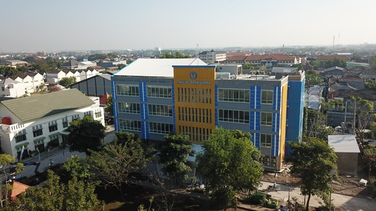

Berikut Daftar Mata Kuliah dari Semester 1-4
| Semester 1 | Semester 2 | Semester 3 | Semester 4 |
| Algoritma & Pemrograman 1 | Basis Data 1 | Struktur Data | Teori Bahasa & Automata |
| Sistem Operasi | Bahasa Inggris Teknik | Arsitektur & Organisasi Komputer | Pemrograman Berorientasi Obyek |
List Romawi Besar dimulai dari no urut 10
List Romawi Kecil dimulai dari no urut 10